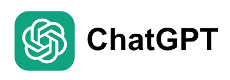

Veilles Technologiques
Qu'est-ce qu'une veille ?
Une veille est une activité consistant à rester au courant des dernières avancées et informations sur un secteur donné.
Durant ce BTS SIO, on peut décider de se mettre à jour sur une ou deux veilles.
Les sources pouvant être utilisées
Pour effectuer une veille technologique, il existe plusieurs outils afin de rester informé, notamment « Feedly », qui est un agrégateur d’actualités permettant de suivre toutes les actualités que l’on souhaite.

D’autre part, une veille technologique s’effectue au quotidien à travers les différents supports/médias/outils que l’on peut retrouver, notamment celui cité ci-dessus.
Mes sujets de veille technologique
*****************************************
Première Année
*****************************************
En première année, j’ai décidé de choisir ChatGPT comme thème de veille technologique. En effet, le domaine de l’intelligence artificielle (IA) et de l’apprentissage automatique (ML) est en constante évolution et de nouveaux développements sont régulièrement publiés, tels que ChatGPT. Cette veille m'a permis de suivre les avancées significatives et les applications potentielles de ces technologies.
Première Veille
Je me suis informé sur ce thème veille depuis le 15 décembre 2022 et j’ai réalisé cette synthèse le 12 février 2023.
TéléchargerDeuxième Veille
J’ai réalisé une seconde veille technologique le 5 mars, et je me suis informé dessus depuis le 15 février.
TéléchargerTroisième Veille
J’ai réalisé une troisième veille technologique le 10 avril, et je me suis informé dessus depuis le 5 mars.
TéléchargerQuatrième Veille
J’ai réalisé une quatrième veille technologique le 30 juillet, et je me suis informé dessus depuis le 20 juillet.
TéléchargerCinquième Veille
J’ai réalisé une cinquième veille technologique le 9 septembre, et je me suis informé dessus depuis le 6 septembre.
TéléchargerSixième Veille
J’ai réalisé une sixième veille technologique le 4 décembre, et je me suis informé dessus depuis le 25 novembre.
TéléchargerCependant, en deuxième année, j'ai décidé de changer de thème et d'en choisir un en lien avec mon projet professionnel et que j'affectionne particulièrement.
*****************************************
Deuxième Année
*****************************************
J'ai donc pris le développement web comme nouveau thème de veille. Que ce soit pour JavaScript, C#, React ou d'autres technologies, je m'efforce de rester à jour dans ce domaine. Cette veille me permet de suivre les dernières tendances, bonnes pratiques et outils utilisés dans le secteur du développement web, me préparant ainsi à mieux répondre aux besoins actuels du marché.

Première Veille
J’ai réalisé une première veille technologique le 5 avril, et je me suis informé dessus depuis le 1 avril.
Télécharger